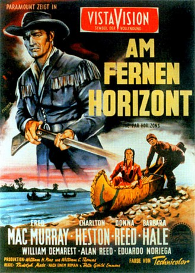

#7920 Am fernen Horizont
Alternativ: The Far Horizons
 
 IMDB-Wertung: 6.2 / 10
IMDB-Wertung: 6.2 / 10  Metascore: 0
Metascore: 0 
Zu Beginn des 19. Jahrhunderts versucht die noch junge Regierung der Vereinigten Staaten, immer mehr Land zu erwerben und zu erkunden. So schickt Präsident Jefferson eine Gruppe von Männern unter der Leitung von Captain Lewis nach Louisiana, um in diesem unberührten Flecken Erde einen Seeweg zum Pazifik zu finden.
Jahr: 1955
Dauer: 102 Minuten
FSK: 12
Land: USA Studio: Paramount PicturesTonspuren:
Untertitel:
Auflösung: 1080p (1920x1080) Größe: 9031 MB
Genre: Western, Geschichte
Regisseur: Rudolph Maté
Drehbuch: Della Gould Emmons
Soundtrack: Hans J. Salter
Darsteller:
 Fred MacMurray als Captain Meriwether Lewis
Fred MacMurray als Captain Meriwether Lewis Charlton Heston als Lt. William Clark
Charlton Heston als Lt. William Clark Donna Reed als Sacajawea
Donna Reed als Sacajawea Barbara Hale als Julia Hancock
Barbara Hale als Julia Hancock- William Demarest als Sgt. Gass
- Alan Reed als Charboneau
 Larry Pennell als Wild Eagle
Larry Pennell als Wild Eagle Argentina Brunetti als Old Crone
Argentina Brunetti als Old Crone- Ralph Moody als Le Borgne
- Herbert Heyes als President Thomas Jefferson
 Lester Matthews als Mr. Hancock
Lester Matthews als Mr. Hancock- Helen Wallace als Mrs. Marsha Hancock
 Walter Reed als Cruzatte (helmsman)
Walter Reed als Cruzatte (helmsman)- Joe Canutt als Joe (uncredited)
 Bill Hickman als Member of the expedition (uncredited)
Bill Hickman als Member of the expedition (uncredited) William Phipps als Oarsman / Camp Sentry (uncredited)
William Phipps als Oarsman / Camp Sentry (uncredited) Al Wyatt Sr. als Undetermined Supporting Role (uncredited)
Al Wyatt Sr. als Undetermined Supporting Role (uncredited)- Eduardo Noriega als Cameahwait
- Julia Montoya als Crow woman
- Frank Fowler als Undetermined Supporting Role (uncredited)
 Bob Herron als Undetermined Supporting Role (uncredited)
Bob Herron als Undetermined Supporting Role (uncredited)- Robert Hinkle als Jake (uncredited)
- Leroy Johnson als Undetermined Supporting Role (uncredited)
- Margarita Martín als Undetermined Supporting Role (uncredited)
- Tom Monroe als George (uncredited)
- Voltaire Perkins als Undetermined Supporting Role (uncredited)
- Vernon Rich als Collins (uncredited)
- Herman Scharff als Undetermined Supporting Role (uncredited)
 Bill Walker als Tom (servant) (uncredited)
Bill Walker als Tom (servant) (uncredited)
Datei: X:\HD-Western-1900-1959\Am fernen Horizont (1955, FSK12, 1920x1080).mkv seit 06.01.2018
Festplatte: HD Eastern+Western
 Es gibt insgesamt 98 Filme in der Gruppe 'HD-Western-1900-1959'
Es gibt insgesamt 98 Filme in der Gruppe 'HD-Western-1900-1959'